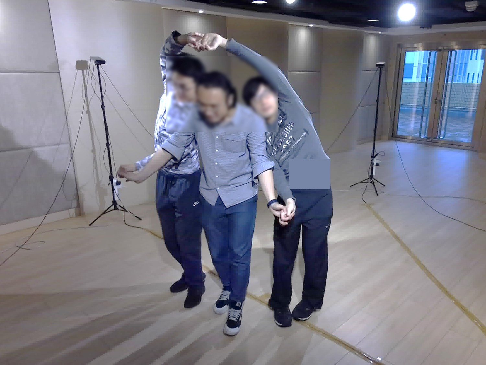
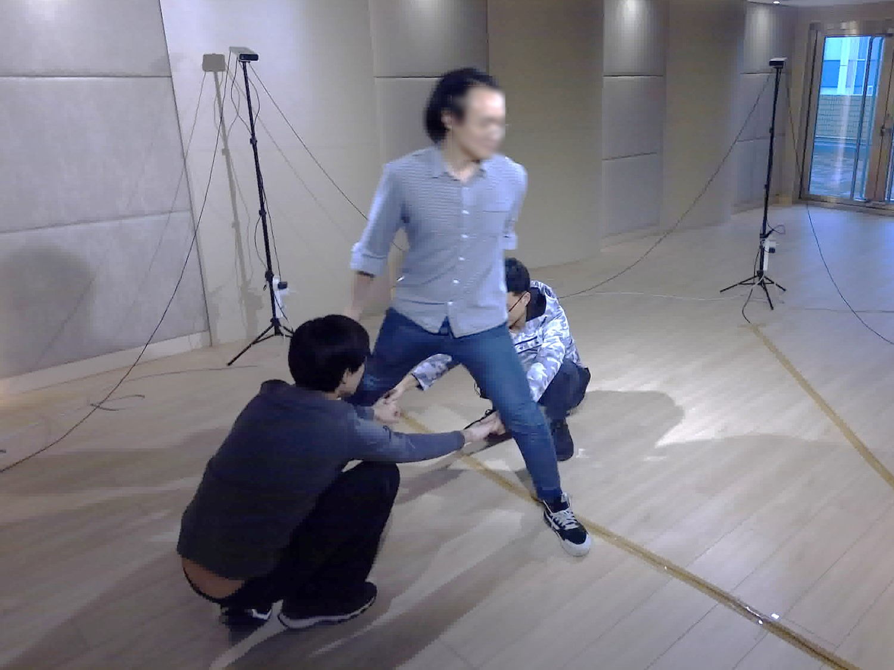
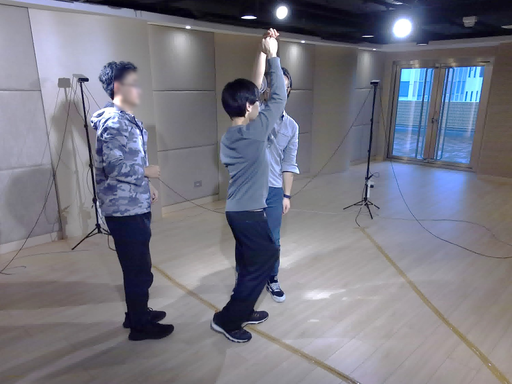
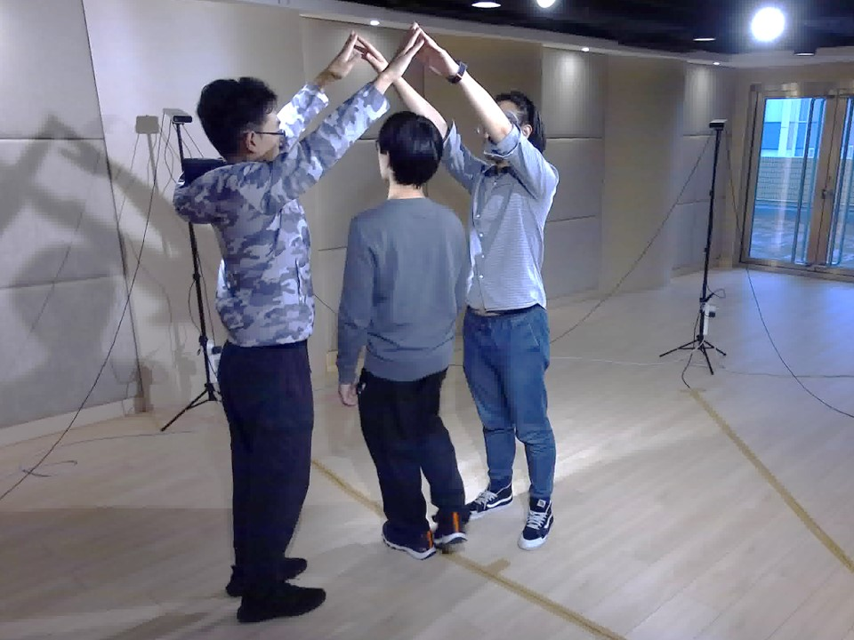

HKBU-Mocap dataset
Introduction
HKBU-Mocap consists of 5 video sequences featuring multi-view, multi-person motions. We have now released all of these sequences, referred to as COOP-6 (short for 6th cooperation), as presented in our paper. COOP-6 provides complete pose annotations for all persons in every frame—there are 2,700 frames in total (originally recorded at 30 FPS and downsampled to 900 frames for easier storage)—captured from 5 cameras during a 3-person activity. All individuals appearing in each frame are manually annotated, following the BODY25 format as defined by OpenPose (see the corresponding skeleton definition here).
Currently, the data is available for download via Google Drive and Baidu Drive. The project page is hosted on a GitPage (we are trying to make it more professional). More details can be found in our supplementary material. Please note that, due to the challenging nature of manual annotation, some imperfections remain. These are mainly caused by inconsistent camera parameters, annotation artifacts, and instabilities in the capture setup. Nevertheless, we are committed to maintaining the dataset and plan to provide improved and more comprehensive data in the future.
Browse




Download links: Google Drive | Baidu Drive
Specs:
- Resolution: 3840 x 2160
- Video length: 2 minutes
- Annotated frame number: 2700
- Video Encode CRF: 30
File Structure:
- Annotation: coop_6_3D.npy
- Video Sequences: video.zip
- Frame RGB images: image.zip
- Camera parameters: camera_params.npy
Citation
1 | @inproceedings{jiang2022dmae, |